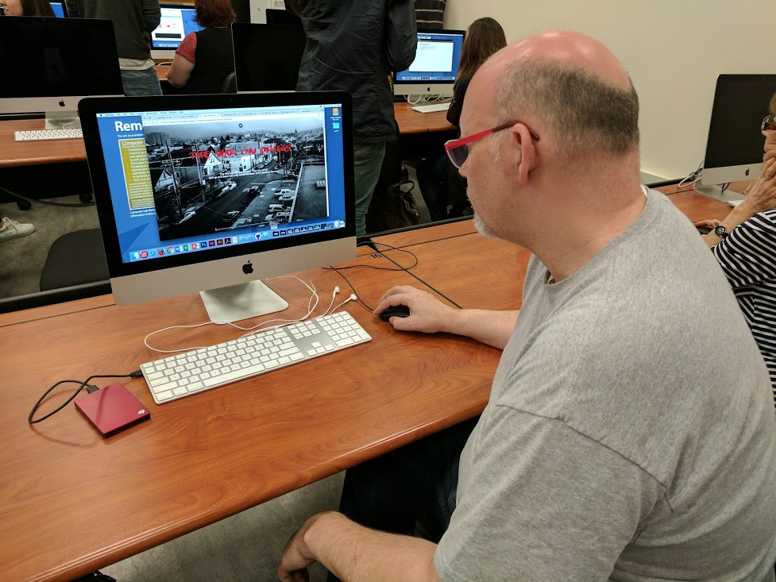
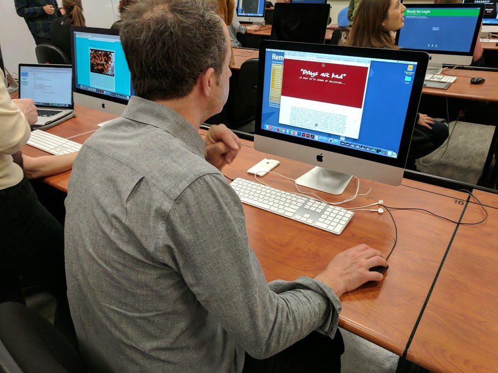

The User Testing was hard to sit through, to say the least. Because a majority of my project was still being built out, I couldn't really visualize exactly how users would navigate the site. Nonetheless, I gained valuable insight from what I did have built out. After discussing my project with my users, I learned that all the extra navigation elements that I added in following the paper prototypes were pretty useless. It made sense on paper since people can't really interact with it. However, on the actual site, it only proved to be more distracting than useful.
In my second user test, I learned that some of the graphical elements that I included were strong, and that I should continue to work around a certain theme. I discovered that I need to refine my fonts choice and color palette.